第19回日本たまごかけごはんシンポジウムです。
2023/10/29
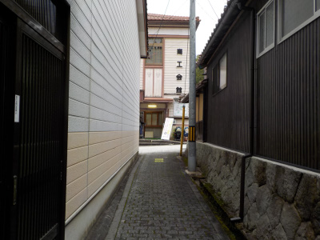
今回は街歩きの要素があったんですが、雨が降ってて寒かったのであちこち見て歩きませんでした。
素敵な街なので、また今度天気のいい日に歩きたいです。
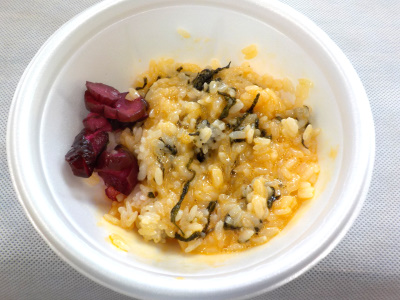
今回たまごかけごはんの会場は2カ所あって、まずは商工会館に行って食べました。
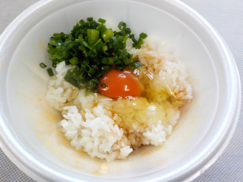
たまごの味が濃くって凄く美味しかったです。
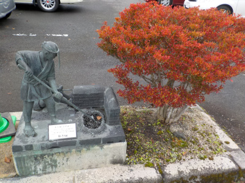
カッコいいオブジェがありました。横の木も紅葉してていい感じです。
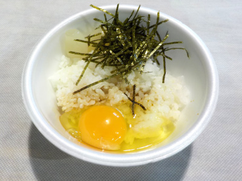
今度は吉田中学校の横の会場に移動しました。
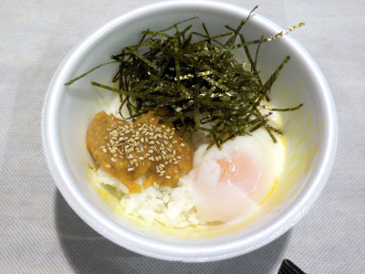
ここは島根県産のたまごや醤油がありました。
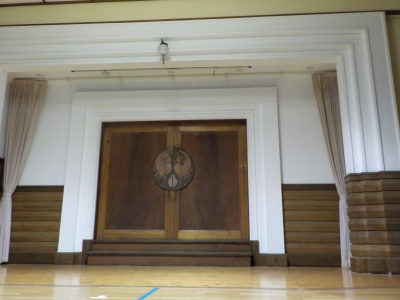
この場所は何度か来ているんですが、まじまじと見たのは初めてです。
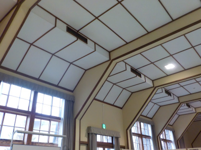
凝った建物で立派でした。
外は雨でいまいちでしたが、いい場所で食事が出来て良かったと思いました。
第12回たまごかけごはんシンポジウムでお腹いっぱいです。
2016/10/30
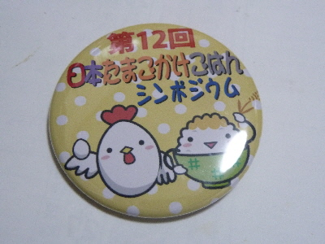
入口で入場料300円を払うとチケットのバッジがもらえました。
洋服にこうゆうのつけるのって久しぶりです。
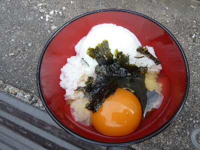
最初からドンドン卵を食べました。
生玉子と温泉玉子のW乗せです。
それぞれ美味しいですね。海苔を乗せると丼ぶり感が出て良かったです。
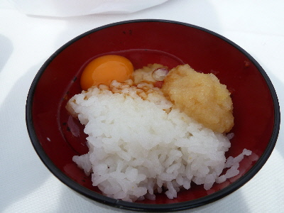
これはすりおろしリンゴ入りです。
私は甘い玉子かけは好きじゃないかな。
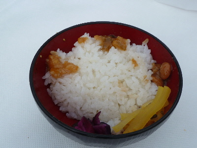
玉子なしで、ご飯とおかず味噌、漬物でもいただきました。
釜で炊いた炊き立てご飯なので、そのままでも風味があって美味しかったです。
おかず味噌との組み合わせは最強だなって思いました。
色々食べたんですが、今回はおかず味噌で味付けした玉子かけご飯が一番好きな味でした。
玉子かけごはんを沢山いただきました。
2015/10/25
ななかまどで焼肉の後は玉子かけご飯です。
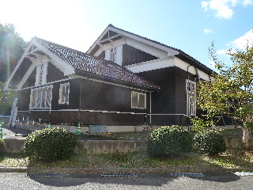
今回は前回と色々違うんですね。
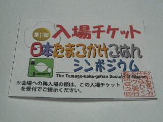
チケットを300円で買うと、たまごかけご飯が好きなだけ食べれるようになっていました。
玉子の種類と醤油の種類を自分でチョイスして、色んな組み合わせの味を楽しめます。
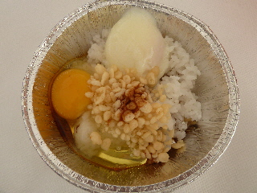
自宅ではありえない組み合わせ、温泉卵と玉子かけご飯の組み合わせをしてみました。
うん。普通の卵も、温泉卵のねっとりした黄身も、それぞれ美味しい。
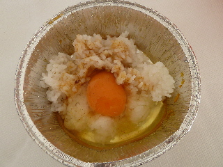
これは普通に玉子かけです。
専用のたまごかけ醤油は美味しいですね。
たまごかけ醤油も、カレー味とかちょっと変わった味が楽しめて面白かったです。
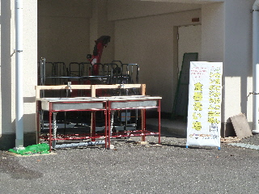
今回はマイ箸はしとマイ器を持参していたので、洗って帰りました。
（器は使い捨てなので、洗う必要なかったですけど）
第10回日本たまごかけシンポジウムでお腹いっぱいになりました。
2014/10/26
ななかまどフェアで焼肉の後は、たまごかけごはんです。
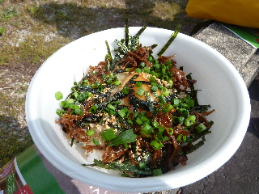
加古川農家食堂の「播磨灘の幸たまごかけごはん」です。
たまごかけごはんの味はしっかりしつつも、「いかなご」味がいいアクセントになっていてとても美味しかったです。
たまごかけごはんの主役は卵だよ！って感じさせられた１品でした。
投票箱に1票入れさせてもらいました。
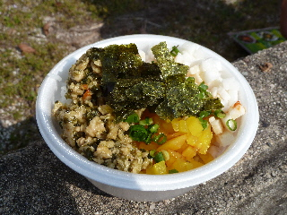
こちらは地元のものです。
田部と吉田ふるさと村の「お母ちゃんのスタミナ飯」です。
商品名から「たまごかけ」をなくしましたね。
ちょっと意欲作な感じです。
やまいも、ミンチ、たくあんで、濃い味が入り混ざっていました。
お肉感が強かったので、スタミナ付きそうでした。
これはこれで美味しかったです。
一人で沢山の種類は食べれないので、他の人とシェアしながら食べましたが、何種類も食べたのでお腹いっぱいになりました。
美味しかったので満足満足です。
雲南市吉田町の日本たまごかけシンポジウム
2013/10/27
初めて吉田町に行きました。
松江尾道線の道の駅「たたらば壱番地」からシャトルバスが出ていたので、道は覚えなくていいので楽ちんです。
でも分かり易い道だったので、次回は自力で行けそうです。
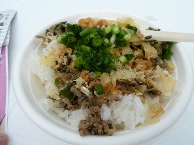
これは吉田ふるさと村の元気もりもりTKGです。（300円）
小魚のふりかけやネギや天かすが入って、ちょっと濃い味のたまごかけごはんになりました。
天かす入れると味が強くなって美味しいですね。
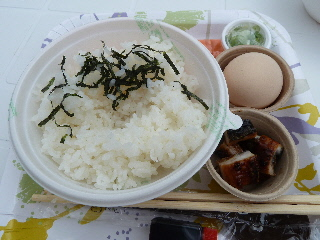
これは奥出雲がんこ村の「がんこ爺さんのうなたまごはん」です。（300円）
どこのTKGも、自分でごはんを盛って、卵も具も自分で盛り付けます。
醤油も自分のお好みでかけれます。
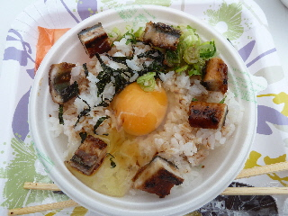
もり付けするのも楽しかったです。
卵1個と御飯の量のを考えると何杯も食べれないので、一緒に行った人と分けて食べるのがいいですね。
今日は9種類のたまごかけごはんがありました。
それそれ凝ったTKGで美味しかったです。
また行きたいです。
近くの稲わら工房に吉田君がいました。
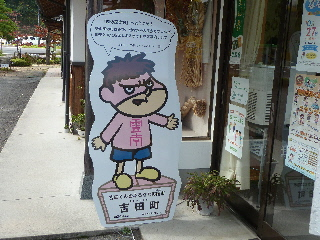
吉田町に来た！って感じがしていいですね。